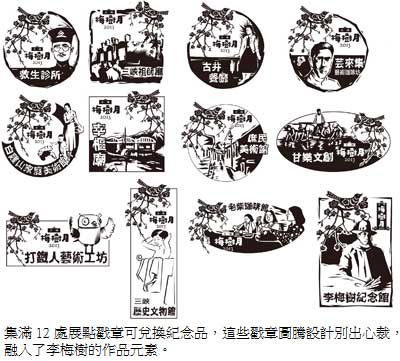

藝術longstay 梅樹月23日登場
謝佳君｜自由時報／新北都會焦點∣2013年3月17日
迎接梅子成熟時，新北市三峽區李梅樹紀念館從三月廿三日至四月廿一日舉辦「梅樹月」系列活動，李梅樹與在地多位跨領域藝術家的作品，將於當地十二處展場展出，來一場「藝術long stay」！
李梅樹紀念品執行長李景文說，今年活動由紀念館與三峽在地四十六位跨領域藝術家共同構思，讓藝術家做自己想做的事，營造生活文化圈。除了李梅樹的作品「出牆」到其他十二個地點展出，包括視覺、裝置及表演藝術等領域的藝術家作品，也將一同展出，讓李梅樹與現代藝術家進行一場跨時空對話。
展出地點包括李梅樹紀念館、三峽祖師廟、三峽歷史文物館、古井餐廳、舊生診所、庶民美術館、芸來集、宰樞廟前廣場、打鐵人藝術工坊、甘樂文創、白雞家庭美術館及老柴咖啡館等，展出作品共有百幅，另有音樂會、講座、ＤＩＹ課程等。
三月廿三日活動開幕當天，將邀請在地社團演出，並送梅樹廣值於北大特區的社區，串聯起舊社區與新社區，形塑三峽成為「無牆美術館」。值得一提的是，李景文說，這次推出的「梅樹月・集章趣」活動，除了活動期間集滿十二處展點戳章可兌換紀念品，這些戳章圖騰更經過別出心裁的設計，融入李梅樹的作品元素。
除了這是一場結合傳統與現代、室內與室外、靜態與動態的盛事，民眾走逛三峽街坊巷弄時，就能體驗「轉角遇見藝術」的驚喜與樂趣，李景文說，由於不少作品會以大圖輸出，待活動結束後，歡迎學校認養，讓藝術種子能在校園落地生根，目前也正招募志工。詳情可上官方網站查詢，或電洽李梅樹紀念館：02-26732333。